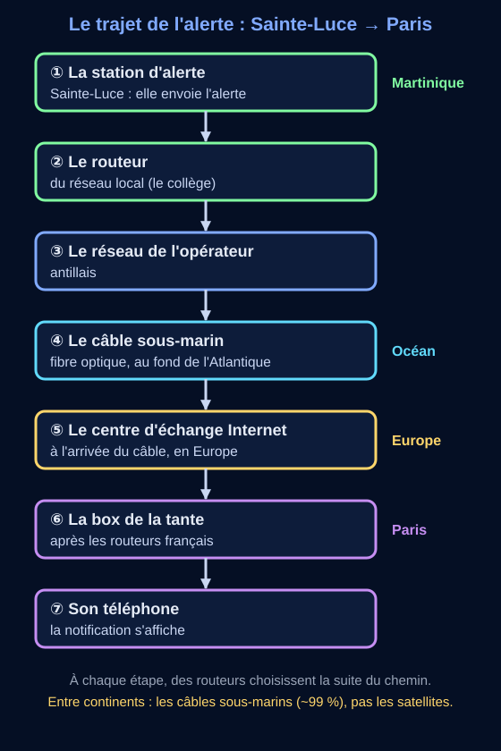

Thème 2 · Martinique — 3e · S5 : Internet jusqu'à Sainte-Luce
Comment l'alerte de notre station traverse-t-elle les réseaux pour arriver jusqu'aux téléphones ?
🖥️ Ordinateur partagé (salle de techno, CDI — le centre de documentation et d'information) : un autre élève qui ouvre cette page sur la même session verra tes réponses.
Quand tu as fini : imprime en PDF si tu veux garder une trace, puis clique sur « 🗑 Effacer ma sauvegarde ».
📖 Rappel : la situation et ton hypothèse
🎯 Avant de commencer : trois choses à lire
- 📚 Ce que tu vas apprendre
Le chemin d'une information à travers Internet, de réseau en réseau, jusqu'à l'autre bout du monde.
Pourquoi elle arrive même quand une route est coupée. - 🛠 Ce que tu dois savoir faire
Représenter le trajet d'une donnée : les paquets, les routeurs, les câbles.
Lire une table de routage pour trouver la route d'un paquet. - ✅ Comment réussir
Le Wi-Fi n'est pas Internet : c'est seulement l'accès sans fil au réseau local.
Dans la table, une règle précise passe avant la règle par défaut.
Après chaque exercice, compare avec la correction.
🔄 Avant de commencer : ce que je vérifie
Pour toi, sans note : coche ce qui est déjà en place. Sous chaque ligne, un lien pour le reprendre si tu n'en es pas sûr·e.
-
→ pas encore sûr·e ? relis la partie 1 de la synthèse 4e_C4.7 à C4.9, « Comment préparer les adresses avant de brancher ? »
-
→ pas encore sûr·e ? relis la partie 2 de la synthèse 4e_C4.7 à C4.9, « Comment donner une adresse fixe au capteur ? »
-
→ pas encore sûr·e ? relis la partie 4 de la synthèse 4e_C4.7 à C4.9, « Comment trouver une panne sans tout débrancher ? »
Dans cette séquence : on sort du collège.
Tu vas suivre le chemin réel d'une donnée depuis Sainte-Luce jusqu'à l'autre bout du monde — les câbles sous-marins, les relais, les opérateurs.
Le principe d'un réseau local, mais à l'échelle d'une île.
Un mot à garder en tête : Internet n'est pas dans les airs ; c'est très majoritairement du câble, posé au fond de la mer.
📋 Référentiel officiel (programme 2024)
| Code | Sous-compétence travaillée | Socle | Activités |
|---|---|---|---|
| 3e_C4.7 | Identifier et représenter la circulation d'une information dans le réseau Internet. | D1.3, D2, D4 | 1, 2, 3, R |
| 3e_C4.8 | Justifier la nécessité d’un protocole de routage pour faire communiquer plusieurs réseaux (activité débranchée, table de routage donnée). | D2, D4, D5 | 4, 5, R |
Compétence parente C4 — BO n°9 du 29/02/2024. Cette séquence prolonge « Station d'alerte cyclonique » (3e_C4.3 → C4.6) : la chaîne d'information se poursuit au-delà du collège.
Référence normative : programme de technologie du cycle 4, BO n°9 du 29 février 2024.
Codification opérationnelle : les codes 3e_C4.3 · 3e_C4.7 · 3e_C4.8 servent à ranger les séquences ; ils ne viennent pas du programme officiel.
Les formulations ci-dessus sont celles du référentiel.
Le mode essentiel masque les corrections et les compléments : il ne reste que les consignes et les exercices. À activer si la page te paraît trop chargée.
📖 Situation déclenchante
Suite de notre projet.
La station d'alerte cyclonique du collège fonctionne : elle mesure, décide, et sait
déclencher sa sirène.
Mais lors de l'exercice d'évacuation de septembre, un problème est apparu : la sirène ne couvre
que le quartier du collège.
Les familles de Rivière-Pilote, de Fort-de-France — et même la tante de Maëlle qui vit à
Paris — doivent recevoir l'alerte sur leur téléphone, en quelques secondes.
Le message d'alerte doit donc quitter le réseau du collège, traverser la Martinique, peut-être l'océan… et arriver
à bon port sans se perdre.
Par où passe-t-il exactement ? Qui décide de son chemin ? Et que se passe-t-il si un
cyclone coupe un câble en route ?

Image générée par IA (Canva).
❓ Problématique
Comment l'information circule-t-elle de réseau en réseau à travers Internet,
et pourquoi arrive-t-elle à destination même quand une route est coupée ?
💭 Mes hypothèses de départ
Réponds avec tes idées actuelles — tu y reviendras à la fin.
🪜 Version étayée — des phrases à compléter
Le niveau attendu est exactement le même qu'avec la consigne libre : ces débuts de phrases retirent l'obstacle de la rédaction, pas l'exigence scientifique.
Recopie-les et complète chaque « ____ ».
- D'après moi, le message part d'abord vers ____.
- Ensuite il traverse ____ pour franchir l'océan.
- Je pense qu'il utilise plutôt ____ que ____, parce que ____.
🪜 Version étayée — des phrases à compléter
Le niveau attendu est exactement le même qu'avec la consigne libre : ces débuts de phrases retirent l'obstacle de la rédaction, pas l'exigence scientifique.
Recopie-les et complète chaque « ____ ».
- Je m'appuie sur ____.
- Ce qui me le fait penser, c'est que ____.
- Ce dont je doute, c'est ____.
🧰 Choix de l'outil
| Outil retenu | Pourquoi | Alternative |
|---|---|---|
| Simulations HTML intégrées (paquets, routage, panne) | Aucune installation, fonctionne hors connexion, sur tout appareil — idéal aussi à la maison. | — |
| Filius (version A, au labo) | Logiciel gratuit confirmé au collège : on construit et teste un vrai petit inter-réseau avec routeurs. | Activité débranchée « jeu du routeur » (aucun poste nécessaire) |
| Cisco Packet Tracer (approfondissement) | Simulation professionnelle. | ⚠ Compte à vérifier — LOGICIEL À CONFIRMER : ne pas en dépendre, Filius suffit. |
🔀 Trois façons de vivre la séquence
🅰 Matériel réel / logiciel
Filius installé au labo : construire le réseau du collège (3 PC + switch + routeur), puis relier deux réseaux et observer le trajet des paquets (mode simulation, commande ping).
🅱 Simulation en ligne
Packet Tracer si les comptes sont disponibles (À CONFIRMER) — sinon rester sur Filius ou la version 🅲.
🅲 Sans matériel
Tout est dans cette page : simulateur de découpage en paquets (activité 3), jeu du routeur (activité 4) et simulateur de panne (activité 5).
Une version imprimable du jeu du routeur permet même de jouer débranché, par équipes.
🎫 Billet d'entrée — trois questions, sans note
Une question par ligne du bloc « Avant de commencer ».
Elles ne sont pas notées et ne comptent pas dans ta progression : elles te disent quoi relire avant de te lancer.
« Je ne sais pas encore » est une réponse utile.
✅ Correction complète du billet — ouvre-la après avoir vérifié
- Dans un réseau qui utilise le masque 255.255.255.0, que peut-on dire des machines 192.168.20.12 et 192.168.20.40 ?
✅ sont dans la même « rue » : seule la fin change
✘ « sont sur deux réseaux, car leur fin diffère » : Avec ce masque, seule la dernière partie de l'adresse désigne la machine. Les trois premières parties sont la « rue » : compare-les.
✘ « ont la même adresse, car le début est le même » : Deux machines n'ont jamais la même adresse dans un réseau : la fin les distingue. - Pourquoi donne-t-on une adresse IP fixe à la station d'alerte ?
✅ on doit la trouver toujours à la même adresse
✘ « une adresse fixe rend la connexion plus rapide » : L'adresse ne change pas la vitesse de la connexion. Pense à ceux qui doivent retrouver la station chaque fois.
✘ « une adresse fixe la protège contre les pirates » : Une adresse fixe ne protège de rien : elle permet surtout de la retrouver. Pense au serveur qui lui envoie ses demandes. - Devant un réseau en panne, quelle est la première étape de la méthode ?
✅ décrire le symptôme : ce qui marche ou pas
✘ « changer le câble, souvent le coupable » : Changer une pièce avant de savoir ce qui ne marche pas, c'est deviner. La méthode commence par observer.
✘ « redémarrer toutes les machines pour voir » : Redémarrer efface ce qu'on aurait pu observer. On commence par décrire ce qui marche et ce qui ne marche pas.
🏫 Séance 1 — Par où passe le message ?
Question directrice : que traverse l'alerte entre la station du collège et un téléphone à Paris ?
Le réseau local du collège
⏱ 25 min🗂 La fiche de l'activité : objectif, compétence, production attendue, ressources
① Observe le schéma.
② Attribue son rôle à chaque équipement.
③ Réponds aux vrai/faux.
💡 Aide de niveau 1
Sur le schéma, suis les traits : qui est relié à qui ?
Le commutateur est AU MILIEU du réseau local.
Le routeur est À LA FRONTIÈRE, là où part la fibre.
💡💡 Aide de niveau 2
Terminaux = les appareils qui utilisent le réseau (PC, station, téléphone).
Le commutateur distribue à l'intérieur ; le routeur fait passer d'un réseau à l'autre.
« Inter-net » signifie littéralement « entre les réseaux » : des milliers de réseaux indépendants interconnectés — personne n'en est propriétaire.
✅ Correction complète
Réponses :
1. Les ordinateurs et la station sont des terminaux.
2. L'équipement qui relie les appareils du réseau local : le commutateur (switch).
3. La « porte de sortie » vers les autres réseaux : le routeur.
4. Chaque équipement possède une adresse IP unique.
5. « Internet appartient à une seule entreprise » : faux.
6. « Sans routeur, le message ne sort pas du collège » : vrai.
Raisonnement : à l'intérieur d'un réseau local, le commutateur relie les terminaux entre eux. Pour sortir, tout passe par le routeur — c'est la seule frontière. Internet n'appartient à personne : c'est l'interconnexion de milliers de réseaux (collèges, opérateurs, entreprises…) qui acceptent des règles communes.
Exemple : chez toi, la « box » joue les deux rôles à la fois : commutateur/Wi-Fi pour l'intérieur, routeur vers ton opérateur.
Limite : certains équipements combinent plusieurs fonctions (box, point d'accès Wi-Fi) — on les classe selon la fonction étudiée.
Le grand voyage : Sainte-Luce → Paris
⏱ 30 min🗂 La fiche de l'activité : objectif, compétence, production attendue, ressources
🪜 Version étayée — des phrases à compléter
Le niveau attendu est exactement le même qu'avec la consigne libre : ces débuts de phrases retirent l'obstacle de la rédaction, pas l'exigence scientifique.
Recopie-les et complète chaque « ____ ».
- Le message part de ____ et rejoint d'abord ____.
- Il passe ensuite par ____, puis franchit l'Atlantique par ____.
- Il arrive enfin à ____ après être passé par le centre d'échange n°____.
✍ Ta réponse écrite sera relue par ton professeur : « Vérifier » regarde si l'essentiel y est, pas si tout est juste.
💡 Aide de niveau 1
Le message part TOUJOURS du réseau local (routeur du collège = étape 1), et finit TOUJOURS chez le destinataire. Entre les deux : d'abord l'île, puis l'océan, puis l'Europe.
💡💡 Aide de niveau 2
Ordre logique : collège (1) → opérateur antillais (2) → câble sous-marin (3) → point d'atterrissage/centre d'échange (4) → routeurs français (5) → téléphone (6).
Les numéros du SVG t'aident à vérifier.
✅ Correction complète
Le schéma fléché attendu sur une feuille de brouillon :

Ordre :
1. de la station au routeur du collège ;
2. l'opérateur antillais ;
3. le câble sous-marin ;
4. l'atterrissage et le centre d'échange ;
5. les routeurs français jusqu'à la box ;
6. la notification.
Trafic intercontinental : par les câbles sous-marins.
Raisonnement : l'information traverse une succession de réseaux — local, opérateur, dorsales intercontinentales, opérateur du destinataire — reliés par des routeurs. Pour une île comme la Martinique, les câbles sous-marins sont vitaux : sans eux, presque plus d'Internet.
Exemple concret : la Martinique est notamment reliée par des câbles sous-marins vers les îles voisines, l'Amérique et l'Europe ; leur maintenance est assurée par des navires câbliers spécialisés.
Contre-exemple (idée reçue) : le satellite existe, mais il est minoritaire : plus lent (latence) et plus cher. Il sert surtout de secours ou pour les zones sans câble.
📦 Séance 2 — Paquets et routage
Question directrice : comment un long message voyage-t-il sans embouteiller le réseau, et qui choisit sa route ?
Découpe, expédie, réassemble !
⏱ 30 min🗂 La fiche de l'activité : objectif, compétence, production attendue, ressources
a) Découpe, expédie, réassemble :
① Écris un court message d'alerte (au moins 12 caractères).
② Clique sur « Découper et expédier » : les paquets arrivent dans le désordre !
③ Remets-les dans l'ordre grâce à leur numéro.
④ Clique sur « Réassembler ».
b) Réponds ensuite aux questions.
Questions
💡 Aide de niveau 1
Regarde l'en-tête de chaque paquet dans le simulateur : numéro, IP source, IP destination — comme une enveloppe postale numérotée.
💡💡 Aide de niveau 2
Les numéros servent au réassemblage ET à détecter une perte : s'il manque le n°2 sur 3, on ne redemande que lui — c'est bien plus efficace que tout renvoyer.
Et de petits paquets peuvent emprunter des routes différentes en parallèle : personne ne bloque le réseau.
✅ Correction complète
a) Ton message a été découpé (ici en 3 paquets), mélangé pendant le transport, puis reconstitué grâce aux numéros d'ordre — exactement comme sur le schéma.
b) numéro → remise en ordre · paquet perdu → on redemande seulement le n°2 · découpage → plusieurs routes possibles + partage équitable du réseau (personne ne monopolise la ligne).
Exemple concret : pendant une vidéo en streaming, des milliers de paquets arrivent chaque seconde, parfois dans le désordre, et ta tablette reconstruit tout sans que tu t'en aperçoives.
Limite : pour certains usages en direct (visio, jeux), redemander un paquet perdu prendrait trop de temps : on préfère parfois l'ignorer (petite coupure d'image) plutôt qu'attendre.
Le jeu du routeur (débranché possible)
👥 Qui fait quoi — et quand on échange
Deux rôles seulement, et on échange à la moitié du temps. Un rôle est un tour, pas une étiquette.
- Le pilote tient l'outil — le clavier, le capteur, le tableur. Il exécute ; il ne décide pas seul.
- Le vérificateur relit chaque nombre et chaque unité avant qu'on les écrive. Il a le droit d'arrêter le groupe.
Si tu travailles à trois ou à quatre
- Le scribe écrit la trace commune — et note aussi ce que le groupe n'a pas su faire.
- Le porte-parole explique à la classe. Il ne parle qu'avec ce que le scribe a écrit : si la trace ne suffit pas, c'est la trace qu'il faut reprendre.
| Rôle | 1re moitié | 2e moitié |
|---|---|---|
| Pilote | ||
| Vérificateur |
À recopier à chaque séance.
Si personne ne change de rôle, c'est
toujours le même qui apprend à tenir le clavier — et ce n'est pas celui qui en avait le
plus besoin.
🗂 La fiche de l'activité : objectif, compétence, production attendue, ressources
198.51.100.x → R1 · réseau 203.0.113.x → R4 · tout le reste → R3. Aiguille chaque paquet, puis justifie.🪜 Version étayée — des phrases à compléter
Le niveau attendu est exactement le même qu'avec la consigne libre : ces débuts de phrases retirent l'obstacle de la rédaction, pas l'exigence scientifique.
Recopie-les et complète chaque « ____ ».
- Un protocole de routage commun est nécessaire parce que les routeurs doivent ____.
- Sans règles identiques pour tous, un routeur fabriqué par une entreprise ne pourrait pas ____.
- C'est comparable à ____ : si chacun utilisait ses propres règles, ____.
✍ Ta réponse écrite sera relue par ton professeur : « Vérifier » regarde si l'essentiel y est, pas si tout est juste.
💡 Aide de niveau 1
Compare le DÉBUT de l'adresse de destination avec les réseaux de la table : 203.0.113.7 commence par 203.0.113…
💡💡 Aide de niveau 2
Paquet D : la route normale (R4) est morte.
La règle « tout le reste → R3 » sert de secours, le temps que les tables se mettent à jour.
Pour la justification : pense à deux personnes qui ne parlent pas la même langue et doivent se transmettre un colis avec des consignes précises…
✅ Correction complète
Aiguillage :
A : vers R4.
B : vers R1.
C : vers R3 — aucune règle précise ne correspond, c'est la règle par défaut.
D : vers R3 — la liaison R4 est coupée, route de secours ; les tables se mettent à jour.
Justification attendue : un paquet traverse des dizaines de routeurs de marques et de pays différents.
S'ils ne partageaient pas les mêmes règles (format des adresses, façon d'annoncer les routes, réaction aux pannes), chaque frontière serait un mur : le paquet serait perdu ou incompris.
Le protocole commun garantit que n'importe quel routeur comprend n'importe quel paquet et sait annoncer ses routes aux voisins — c'est ce qui fait d'Internet UN réseau mondial au lieu d'îlots isolés.
Exemple : c'est comme le code de la route : peu importe la marque de la voiture ou le pays du conducteur, tout le monde comprend « priorité à droite » — sinon, carambolage.
🅰 Version Filius (au labo, avec le professeur)
Protocole :
1. construire deux réseaux locaux (2 PC + switch chacun) ;
2. les relier par deux routeurs ;
3. configurer les adresses IP (ex. 192.168.1.x et 192.168.2.x) ;
4. passer en mode simulation ;
5. envoyer un ping d'un réseau à l'autre et observer le trajet des paquets ;
6. couper une liaison et observer l'échec puis le re-routage après reconfiguration.
Dépannage : ping en échec → vérifier les passerelles des PC ; paquets bloqués au routeur → table de routage incomplète.
Version débranchée : 3 équipes = 3 routeurs, enveloppes numérotées avec adresses ; chaque équipe n'a que SA table.
Chronométrer la livraison, puis « couper » une équipe et refaire la partie.
🌀 Séance 3 — Quand la route casse… et défi final
Question directrice : pourquoi Internet continue-t-il de fonctionner même quand un cyclone coupe un câble ?
Coupe le câble ! (simulateur de panne)
⏱ 25 min🗂 La fiche de l'activité : objectif, compétence, production attendue, ressources
a) Note le chemin choisi.
b) Coupe une liaison DU chemin en cliquant dessus, et observe.
c) Continue de couper : que se passe-t-il quand plus AUCUN chemin n'existe ? Réponds ensuite.
Clique sur « Envoyer l'alerte » pour commencer. (Astuce : clique sur une liaison pour la couper/réparer.)
🪜 Version étayée — des phrases à compléter
Le niveau attendu est exactement le même qu'avec la consigne libre : ces débuts de phrases retirent l'obstacle de la rédaction, pas l'exigence scientifique.
Recopie-les et complète chaque « ____ ».
- Internet a été conçu avec plusieurs chemins possibles pour que ____.
- Les tables de routage sont mises à jour en permanence afin de ____.
- En revanche, aucun protocole ne peut ____ : si toutes les routes physiques sont coupées, ____.
✍ Ta réponse écrite sera relue par ton professeur : « Vérifier » regarde si l'essentiel y est, pas si tout est juste.
💡 Aide de niveau 1
Fais vraiment les expériences ! Envoie, coupe la liaison utilisée (elle devient rouge), renvoie. Observe le NOUVEAU chemin affiché.
💡💡 Aide de niveau 2
Le maillage offre plusieurs chemins possibles ; le protocole de routage détecte la coupure et met à jour les tables : le trafic contourne.
Mais si R5 est totalement isolé (plus aucune liaison), aucune règle ne peut l'atteindre : la résilience a une limite physique.
✅ Correction complète
a) Chemin initial : R1→R3→R5 (le plus court : 2 sauts seulement).
b) Après coupure d'une liaison du chemin (ex. R3-R5) : re-routage automatique par un chemin plus long, R1, R3, R4, R5 ou R1, R2, R4, R5.
Plus lent, mais l'alerte arrive.
c) R5 isolé (R3-R5 ET R4-R5 coupées) : « livraison impossible ».
Le protocole ne crée pas de câbles, il exploite ceux qui existent.
Explication attendue : Internet est maillé (plusieurs chemins possibles entre deux points) et les routeurs s'informent mutuellement des routes disponibles grâce au protocole de routage.
Une panne locale est contournée automatiquement, sans intervention humaine — conception héritée des besoins de résilience des premiers réseaux.
C'est vital en zone cyclonique !
Exemple réel : quand un câble sous-marin est endommagé aux Antilles, le trafic est re-routé par les câbles voisins ; la connexion devient plus lente, mais elle survit.
🗼 Un mail pour Tokyo
⏱ 25 min🗂 La fiche de l'activité : objectif, compétence, production attendue, ressources
🪜 Version étayée — des phrases à compléter
Le niveau attendu est exactement le même qu'avec la consigne libre : ces débuts de phrases retirent l'obstacle de la rédaction, pas l'exigence scientifique.
Recopie-les et complète chaque « ____ ».
- Ce voyage n'est possible que parce que tous les réseaux traversés ____.
- Chaque appareil du trajet sait quoi faire du paquet parce qu'il ____.
- Si un seul maillon n'appliquait pas les mêmes règles, alors ____.
✍ Ta réponse écrite sera relue par ton professeur : « Vérifier » regarde si l'essentiel y est, pas si tout est juste.
💡 Aide de niveau 1
Reprends la logique de la séquence : sortie du réseau local → succession de réseaux → paquets numérotés → routage résilient. Le calcul est une simple division.
💡💡 Aide de niveau 2
3 000 000 ÷ 1 500 = 2 000 paquets.
Pour la justification : adresses comprises partout + règles de transport identiques + annonces de routes — sans cela, chaque frontière de réseau serait un mur.
✅ Correction complète
Réponses :
1. L'équipement qui aiguille : le routeur.
2. 2 000 paquets.
3. Le trajet : des câbles sous-marins successifs.
4. Seul le paquet n°1207 est redemandé.
5. « Tous les paquets suivent la même route » : faux, les routes peuvent différer.
6. Liaison coupée : re-routage par d'autres câbles.
Justification : le mail traverse des dizaines de réseaux d'opérateurs et de pays différents.
Ils n'ont ni le même matériel ni la même langue humaine — mais ils partagent les mêmes protocoles : adressage IP compris par tous, découpage en paquets identique, règles de routage communes et annonces de routes mutuelles.
C'est cette norme partagée qui transforme des milliers de réseaux étrangers en UN réseau mondial.
Bilan : si tu as répondu sans rouvrir les corrections, les notions sont acquises — note le reste dans ton bilan ci-dessous.
📝 Synthèse de la séquence — à retenir
Toutes ces notions ont été construites dans les activités 1 à 5 — rien de nouveau ici.
1. Du réseau local à Internet (activités 1-2)
Un réseau local = terminaux + commutateur (relie à l'intérieur) + routeur (porte vers les autres réseaux).
Chaque équipement a une adresse IP.
Internet est un réseau de réseaux : une information traverse une succession de réseaux (local, opérateur, câbles sous-marins, opérateur du destinataire).
On sait représenter ce trajet par un schéma fléché. ~99 % du trafic intercontinental passe par les câbles sous-marins.
2. Les paquets (activité 3)
Tout message est découpé en paquets numérotés portant les adresses IP source et destination.
Ils voyagent indépendamment (routes parfois différentes), sont réassemblés grâce aux numéros, et un paquet perdu est redemandé individuellement.
3. Le routage et sa nécessité (activités 4-5)
Chaque routeur aiguille les paquets grâce à sa table de routage, mise à jour automatiquement.
Le protocole de routage commun est indispensable : sans règles partagées par tous les réseaux, pas de communication possible entre eux.
Le maillage + les mises à jour rendent Internet résilient aux pannes — dans la limite du physique : un réseau isolé reste injoignable.
🇬🇧 Vocabulaire utile
réseau = networkrouteur = routercommutateur = switchpaquet = packettable de routage = routing tablecâble sous-marin = submarine cableprotocole = protocolpare-feu = firewall
🎁 Bonus (facultatif — hors parcours obligatoire)
🎁 Les 3 défis du Bonus — ouvre-les quand tu as fini
🗺 Défi carte : sur le site (public) de cartographie des câbles sous-marins, retrouve les câbles qui desservent la Martinique et note leurs points d'atterrissage.
✅ Corrigé du défi carte
Ce que ta réponse doit contenir : le nom de chaque câble qui touche la Martinique.
Et, pour chacun, le lieu où il sort de l'eau (son point d'atterrissage), sur l'île et à l'autre bout.
Comment lire la carte :
① zoome sur la Martinique ;
② clique sur chaque trait qui touche l'île : la fiche du câble s'ouvre ;
③ relève son nom, sa longueur et la liste de ses points d'atterrissage.
Ce que tu dois constater : plusieurs câbles, pas un seul.
Certains suivent l'arc des Antilles, d'île en île ; l'un d'eux relie la Martinique à la Guyane.
Pourquoi c'est important : si un câble est coupé, les messages passent par un autre.
C'est le maillage, et le re-routage que tu as étudié : la connexion ralentit, mais elle survit.
Ce corrigé ne donne pas la liste des câbles : elle change dès qu'un câble est posé ou retiré.
C'est la carte, tenue à jour, qui fait foi.
⏱ Défi mesure : avec le professeur, lance tracert (Windows) vers un site français puis japonais : compte les routeurs traversés et compare.
✅ Corrigé du défi mesure
Lire tracert : chaque ligne numérotée est un routeur traversé (un « saut »).
Les trois temps, en millisecondes (ms), sont trois mesures de l'aller-retour jusqu'à ce routeur.
Ce que tu dois observer (les nombres changent d'un jour à l'autre) :
· vers le site français : une dizaine à une vingtaine de sauts ;
· vers le site japonais : souvent davantage de sauts, et des temps plus longs.
Où regarder : la ligne où le temps bondit d'un coup, par exemple de 20 ms à plus de 100 ms.
Entre ces deux routeurs, le message a traversé un océan par un câble sous-marin.
Trois pièges :
· une ligne « * * * » n'est pas une panne : ce routeur ne répond pas aux mesures, mais il transmet le message ;
· plus de sauts ne veut pas toujours dire plus lent : c'est la longueur des liaisons qui compte ;
· un site « japonais » peut répondre très vite s'il est servi par une copie installée près de nous.
🔧 Défi Filius : ajoute un 3e réseau à ton montage Filius et fais communiquer les trois — combien de routes possibles maintenant ?
✅ Corrigé du défi Filius
Le montage : le 3e réseau prend une nouvelle famille d'adresses, par exemple 192.168.3.x, avec son propre routeur.
Chaque machine reçoit pour passerelle l'adresse de son routeur.
Combien de routes ? Tout dépend de la façon de relier les trois routeurs.
· En ligne (R1 — R2 — R3) : entre deux réseaux, un seul chemin.
Si une liaison casse, la communication est coupée.
· En triangle (chaque routeur relié aux deux autres) : entre deux réseaux, deux chemins : le direct, et le détour par le troisième routeur.
Trois réseaux, cela fait trois paires à faire communiquer : 1–2, 1–3 et 2–3.
En ligne : 3 routes possibles.
En triangle : 3 × 2 = 6 routes possibles.
Pour que le ping passe : chaque routeur doit connaître les réseaux qu'il ne touche pas (sa table de routage, ou le routage automatique si ta version de Filius le propose).
Si un ping échoue, c'est la première chose à vérifier.
Ce que cela montre : le triangle coûte une liaison de plus, et il offre un chemin de secours. C'est le maillage d'Internet, en tout petit.
🪞 Mon bilan personnel
🪜 Version étayée — des phrases à compléter
Le niveau attendu est exactement le même qu'avec la consigne libre : ces débuts de phrases retirent l'obstacle de la rédaction, pas l'exigence scientifique.
Recopie-les et complète chaque « ____ ».
- J'ai appris que un paquet voyage de réseau en réseau grâce à ____.
- J'ai appris que une table de routage sert à ____.
- J'ai appris que l'essentiel du trafic intercontinental passe par ____.
🪜 Version étayée — des phrases à compléter
Le niveau attendu est exactement le même qu'avec la consigne libre : ces débuts de phrases retirent l'obstacle de la rédaction, pas l'exigence scientifique.
Recopie-les et complète chaque « ____ ».
- Je sais maintenant suivre le trajet d'un message de la Martinique à ____.
- Je sais maintenant expliquer pourquoi un message arrive même quand ____.
- Je sais maintenant justifier la nécessité d'un protocole commun en ____.
🪜 Version étayée — des phrases à compléter
Le niveau attendu est exactement le même qu'avec la consigne libre : ces débuts de phrases retirent l'obstacle de la rédaction, pas l'exigence scientifique.
Recopie-les et complète chaque « ____ ».
- Je dois encore revoir ____, parce que ____.
- Ce que je n'arrive pas encore à faire seul·e : ____.
- Pour progresser, la prochaine fois je ____.
🧠 Prêt·e à t'entraîner ?
30 questions pour vérifier toutes les notions — corrections détaillées, minuteur facultatif, reprise possible.
🚀 Ouvrir le QCM d'entraînement